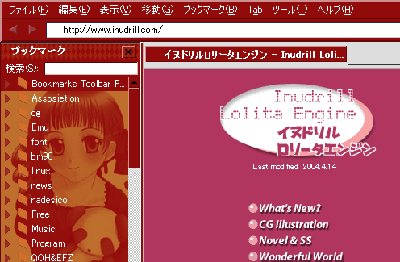

画像はサヤカさんのイヌドリルロリータエンジンから許可を貰って画像拝借いたしました～。
さぁ、君もドリルがチャームポイントな瞳子ちゃんに一緒に罵られよう！（微違
| MozillafireFox 5.0 | Download(xpi) | (DLしたファイルをFirefoxにドラッグ＆ドロップして下さい) |
| MozillafireFox 4.0 | Download(xpi) | (DLしたファイルをFirefoxにドラッグ＆ドロップして下さい) |
| Mozillafirefox 3.0 | Download(jar) | |
| Mozillafirefox 2.0 | Download(jar) | |
| Mozillafirefox 1.5 | Download(jar) | |
| Mozillafirefox 1.0 | Download(jar) | |
| Mozillafirefox 0.9,1.0β | Download(jar) | |
| Mozillafirefox 0.8 | Download(jar) | |
| Mozillafirebird 0.7 | Download(jar) | |
| Mozilla 1.6(不完全版、現在改変中) | Download(jar) |